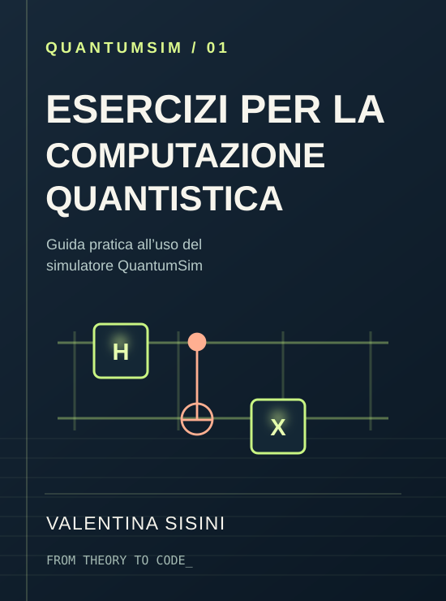

Il codice è aperto.
Un progetto scritto in C da leggere, modificare e utilizzare come base per i tuoi esperimenti.
QuantumSim è un simulatore open source scritto in C per esplorare qubit, porte e algoritmi quantistici. Un modo concreto per imparare: costruisci un circuito, eseguilo e osserva che cosa succede.
Su un computer quantistico reale, la misura restituisce un risultato classico e, in generale, modifica lo stato del sistema. Con un simulatore puoi anche ispezionare le ampiezze durante il calcolo, senza eseguire una misura fisica.
QuantumSim rende visibili i passaggi intermedi: dalle prime porte logiche agli stati entangled, fino ai circuiti degli algoritmi di Deutsch e Grover.
Approfondisci il progettoUn progetto scritto in C da leggere, modificare e utilizzare come base per i tuoi esperimenti.
Osserva gli stati intermedi, le ampiezze complesse e le trasformazioni applicate dai gate.
Un percorso progressivo di esercizi e algoritmi, accompagnato dalla teoria necessaria per comprenderli.
Applica le porte a un sistema di due qubit e guarda come cambiano le probabilità. Parti da |00⟩, prova H(q₀) e poi CNOT per costruire uno stato di Bell.
Seleziona le porte nell'ordine in cui vuoi applicarle.
La differenza importante: stampare uno stato in un simulatore non equivale a misurarlo. Il libro parte proprio da questa distinzione, poi costruisce le competenze necessarie per riconoscere sovrapposizione, correlazione e interferenza nel codice.
Una sequenza di esercizi che segue il capitolo 5 del libro: ogni passo introduce un'idea, la traduce in C e invita a osservare il risultato.
Nessun esercizio corrisponde alla ricerca. Prova un altro termine.
I capitoli 6 e 7 del libro mostrano come le trasformazioni studiate negli esercizi si combinano in due algoritmi fondamentali.
L’algoritmo di Deutsch determina una proprietà globale di una funzione booleana usando una sola interrogazione dell'oracolo.
Esplora l'algoritmo NEL LIBRO — CAPITOLO 6Grover combina oracolo e diffusione per amplificare le probabilità degli stati target, sfruttando l'interferenza.
Esplora l'algoritmo NEL LIBRO — CAPITOLO 7
Esercizi per la computazione quantistica
Guida pratica all’uso del simulatore QuantumSim
Il libro accompagna il lettore nell'uso concreto di QuantumSim: ogni esercizio introduce la teoria necessaria, propone un circuito scritto in C e guida nell'osservazione dei risultati. Non serve attendere l'accesso a un computer quantistico reale per iniziare a sperimentare.
Fondamenti essenziali — Stati, ampiezze, gate e misura spiegati quando servono.
Esercizi progressivi — Dai primi qubit alla sovrapposizione e all'entanglement.
Algoritmi completi — Deutsch e Grover, dalla teoria alla simulazione.
Titolo e sottotitolo ripresi dal frontespizio del PDF fornito; la grafica qui mostrata è un’illustrazione del volume, non la copertina commerciale.
Ti bastano Git, un compilatore C e Make. Il simulatore gira sul tuo computer: nessuna credenziale per accedere a hardware quantistico.
Su Ubuntu/Debian puoi installare gli strumenti necessari con sudo apt install git build-essential.
Clona il repository ufficiale nel tuo computer.
git clone https://github.com/francescosisini/QuantumSim.git
cd QuantumSimGenera l'eseguibile usando il Makefile.
makeCompila un circuito e osserva l'output.
make -B CIRCUIT_FILE=Esercizi/es_12_first_bell_state.c
./QuantumSim✳ Il comando make -B ricompila anche quando cambi file dell'esercizio, evitando di riutilizzare un eseguibile precedente.